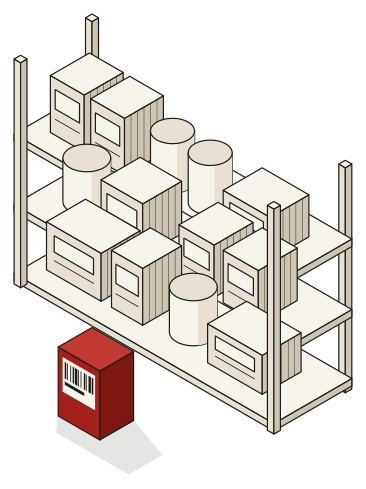
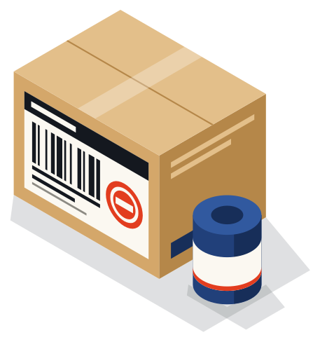

Tres direcciones visuales
Son bocetos estáticos con alertas reales de los fixtures. El nombre "Retirado" y su rótulo son provisionales: el logo se diseña en la Fase 2.
A. Boletín
Periódico de referencia. Retícula editorial, reglas finas y serif con autoridad. Transmite calma y rigor; es la más densa y la más sobria.
- papel #f7f4ec
- tinta #1d1b18
- acento #a3211c
- alérgenos #6a4a00
- clase #27486b
Tipografía: Newsreader (titulares) y Public Sans (texto). Ambas OFL.
Inicio, móvil
Ficha, móvil
Inicio, escritorio
Ficha, escritorio
Ilustración: estantería, tinta y tramado

B. Etiqueta
Sale del propio envase: lote en monoespaciada, titulares de imprenta y la ficha como un panel de información nutricional. Es la más propia y la más orientada a la consulta.
- fondo #efe9dc
- etiqueta #fbf8f1
- carbón #14181f
- sello #c22f10
- azul #21407a
- kraft #d4a76a
Tipografía: Sofia Sans Extra Condensed (titulares), IBM Plex Sans (texto) e IBM Plex Mono (lotes y códigos). Todas OFL.
Inicio, móvil
Ficha, móvil
Inicio, escritorio
Ficha, escritorio
Ilustración: envase, colores planos

C. Señal
Señalética cívica: bloques de color, pictogramas y buscador fijo abajo en móvil para usarlo con una mano. Es la más directa y la más cercana.
- verde #0f4d3f
- amarillo #f5c518
- papel #fbfaf5
- gris #e8e6dc
- grave #b3261e
Tipografía: Bricolage Grotesque (titulares) y Atkinson Hyperlegible Next (texto, diseñada para baja visión). Ambas OFL.